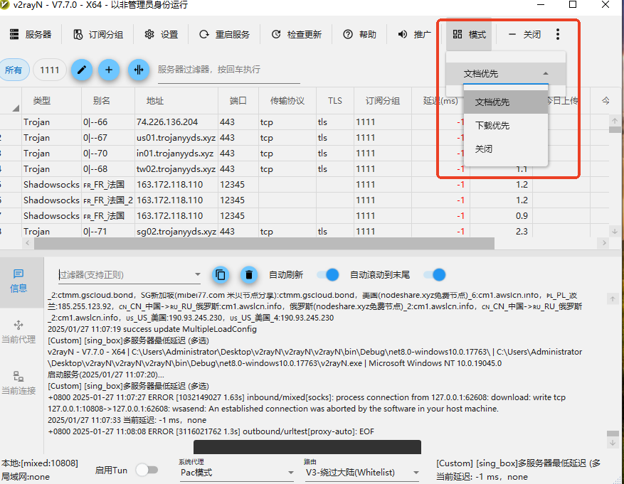

利用 V2rayN 的多服务器最低延迟功能，动态切换可用且优质的线路，提升上网体验。
文档优先：适合浏览网页和逛 GitHub，定时检测所有免费节点的访问延迟，将延迟最小的前10个节点放入多服务器最低延迟的配置列表中。
下载优先：适合观看高清视频和上传下载，定时检测所有免费节点的下载速度，将表现良好的节点放入多服务器最低延迟的配置列表中。
使用也很简单：打开定制化开发的 V2rayN，然后点击菜单工具栏里的模式选择，选择"文档优先"或"下载优先"。等待大约一分钟，系统将自动配置好，您就可以直接使用了。后续系统会动态切换节点，确保最佳的上网体验。
